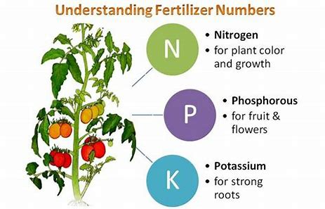
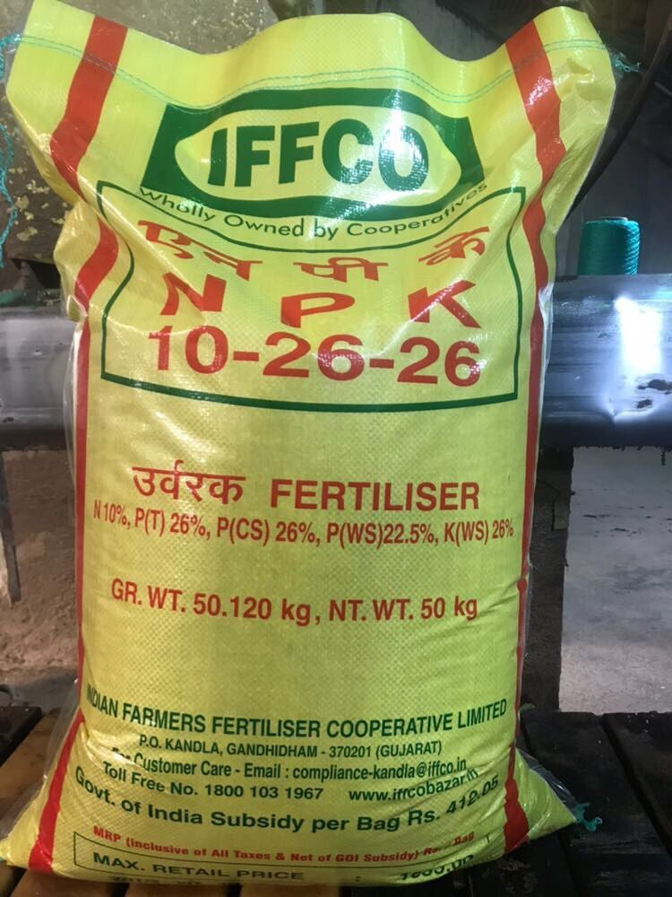

- Nitrogen (N): Essential for leaf growth and green color
- Phosphorus (P): Vital for root and flower development
- Potassium (K): Important for overall plant health
Understanding Fertilizer Types
Essential Plant Nutrients

Featured Products
Premium NPK Fertilizer

Balanced Nutrition for All Crops
Our premium NPK formula provides the perfect balance of essential nutrients for optimal plant growth and maximum yields.
- Perfect N-P-K ratio
- Enhanced nutrient absorption
- Environmentally friendly
- Suitable for all soil types
Best Seller
View Details